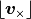
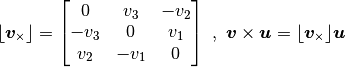

utils.quat module¶
- Quaternion provides a class for manipulating quaternion objects. This class provides:
- a convenient constructor to convert to/from Euler Angles (RA,Dec,Roll)
- to/from quaternions
- class methods to multiply and divide quaternions
-
utils.quat.DCM2FordAngles(matrix, rollArnab=0, prVersions=False)¶
-
class
utils.quat.Quat(attitude)¶ Bases:
objectQuaternion class
Example usage:
>>> from Quaternion import Quat >>> quat = Quat((12,45,45)) >>> quat.ra, quat.dec, quat.roll (12, 45, 45) >>> quat.q array([ 0.38857298, -0.3146602 , 0.23486498, 0.8335697 ]) >>> q2 = Quat([ 0.38857298, -0.3146602 , 0.23486498, 0.8335697]) >>> q2.ra 11.999999315925008
Multiplication and division operators are overloaded for the class to perform appropriate quaternion multiplication and division.
Example usage:
>>> q1 = Quat((20,30,40)) >>> q2 = Quat((30,40,50)) >>> q = q1 / q2
Performs the operation as q1 * inverse q2
Example usage:
>>> q1 = Quat((20,30,40)) >>> q2 = Quat((30,40,50)) >>> q = q1 * q2
Parameters: attitude – initialization attitude for quat attitudemay be:- another Quat
- a 4 element array (expects x,y,z,w quat form)
- a 3 element array (expects ra,dec,roll in degrees)
- a 3x3 transform/rotation matrix
-
dec¶ Retrieve Dec term from equatorial system in degrees
-
equatorial¶ Retrieve [RA, Dec, Roll] :rtype: numpy array
-
q¶ Retrieve 4-vector of quaternion elements in [x, y, z, w] form
Return type: numpy array
-
ra¶ Retrieve RA term from equatorial system in degrees
-
roll¶ Retrieve Roll term from equatorial system in degrees
-
transform¶ Retrieve the value of the 3x3 rotation/transform matrix :returns: 3x3 rotation/transform matrix :rtype: numpy array
-
utils.quat.cost(x, q, order)¶
-
utils.quat.getAngles(q, order='YPR')¶ Returns the three angles (Yaw,-Pitch,Roll) that describe the quaternion
qapplied in the defined multiplication orderExample usage:
>>> q = Quat((20,30,40)) >>> angles=getAngles(q,order='YPR') >>> print angles [ 34.72446346 8.05229897 47.93141757] >>> Y=Quat((angles[0],0,0)) >>> P=Quat((0,angles[1],0)) >>> R=Quat((0,0,angles[2])) >>> Y*P*R [ 20.0000036 30.00002361 40.00001084]
Parameters: - q – a utils.quat.Quat object
- order – desired multiplication order (ie. ‘RPY’ is R*P*Y)
Returns: 3-dimensional np.array, [Yaw,-Pitch,Roll] angles in degrees
-
utils.quat.normalize(array)¶ Normalize a 4 element array/list/numpy.array for use as a quaternion
Parameters: quat_array – 4 element list/array Returns: normalized array Return type: numpy array
-
utils.quat.vec2skew(v)¶ Return the skew-symmetric matrix  related to the vector
v
Parameters: v – a 3-dimensional vector Returns: a skew-symmetric matrix Return type: 3x3 np.matrix